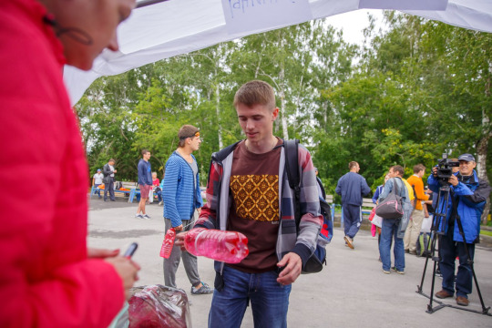
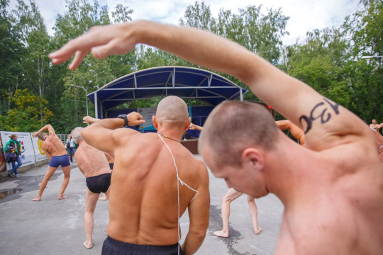
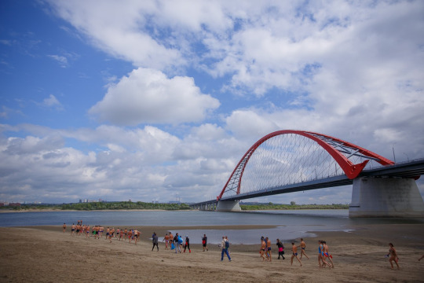
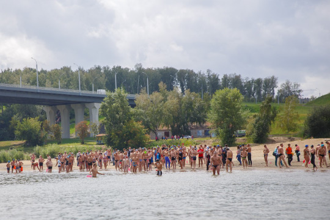
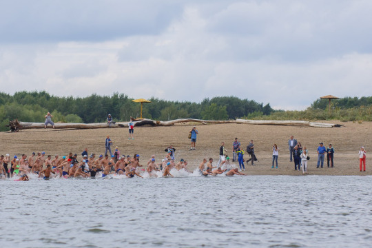
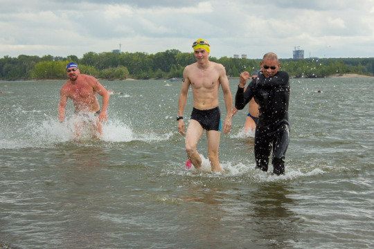

Посчастливилось поучаствовать в благотворительном заплыве через реку Обь в субботу. Он оказался знаменателен тем, что данную дистанцию не плавали с 2009 года, насколько понимаю, это связано со строительством Бугринского моста. В предыдущие годы плавали от острова “Кораблик” до пляжа “Бугринская роща” (~1 км), а нынче, от пляжа и до причала Речного вокзала (~3.6 км).
Как и всегда, подобные мероприятия начинаются с регистрации, раздачи стартовых номеров, просмотра схемы маршрута и моральной подготовки к старту.

Перед заплывом была организована массовая разминка.

Послушали торжественные речи организаторов, размялись и отправились на старт.

Старт немного затянулся и было прохладно стоять у воды, кто-то стал плавать, кто-то продолжил разминаться. Люди общались, фотографировались, царила дружественная атмосфера. Главный судья провёл небольшой брифинг по поведению в воде и через пару минут начался обратный отчёт.

Во время старта всегда забавно наблюдать, как начинает бурлить вода от гребков спортсменов. В подобных полупрофессиональных стартах я обычно чувствую себя комфортно, так как люди, как правило, расслаблены и культурны - никто не раздаёт подзатыльники и не тянет тебя под воду, как это было на триатлоне.

Ещё до заплыва, я следил за температурой воды и перед самим стартом ходил проверить, чтобы принять решение одевать гидрокостюм или нет. В итоге, остановился на том, что вода тёплая и делать этого не стоит. Всё было чудесно ориентировочно первый километр, потом мы достаточно далеко отплыли от берега и вода перестала быть такой тёплой. Как я ни старался активно грести - начинал либо уставать, либо замерзать. От этого немного запаниковал, стал терять ориентиры и последний километр доплывал брассом - так было спокойней, ещё немного переживал, что пропущу финишный створ и уплыву из-за течения дальше.
В итоге, отделался лишь небольшими приключениями описанными выше и благополучно финишировал. Время в пути 37:46:03 - течение делает своё дело. В бассейне я за такое время успеваю проплыть лишь порядка 2 км, против 3.6 км по реке. Символично, что мой стартовый номер был 50, именно такое место я занял в общем зачёте среди 120 человек.

Если Вы дочитали до конца, то поделюсь секретом: после того как вышел из воды я трясся минут 20 и не мог остановиться, видимо такой эффект дала нагрузка в совокупности с небольшим переохлаждением. В кафе не мог нормально попить чай, потому что боялся расплескать и было как-то некомфортно от того, что окружающие глядели не отрывая глаз.
Но заплывом остался доволен. Вынес стандартные уроки:
перед подобными стартами нужно закаляться, либо плавать в костюме
нужно улучшать способность ориентирования
Маршрут и мои плавательные характеристики можно посмотреть здесь.
Информация по заплыву находится на этом сайте - http://blagzapliv.sozvezdieserdec.ru/